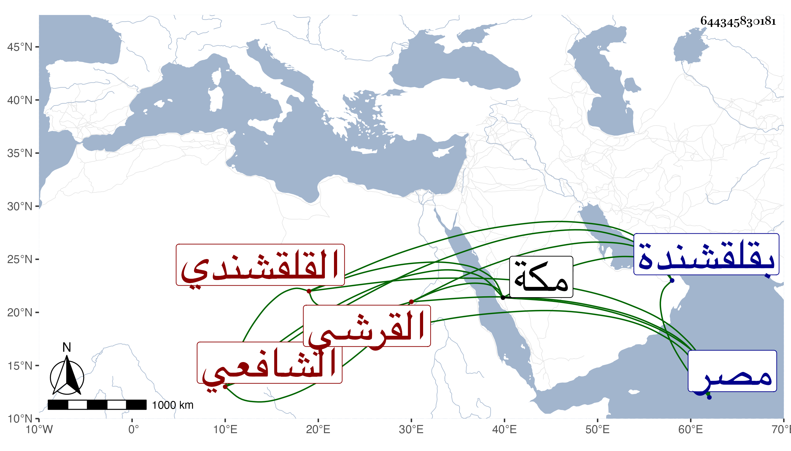

0902Sakhawi.DawLamic.ITO20230111-ara1.EIS1600.644345830181
Biography ID: 644345830181
497
محمد بن محمد بن محمد بن إسماعيل بن علي البدر أبو عبد الله القرشي القلقشندي الشافعي . ولد سنة اثنتين وأربعين وسبعمائة كما قرأته بخطه ، زاد المقريزي في أول المحرم بقلقشندة من ضواحي مصر وتحول منها وهو صغير فقرأ القرآن والمنهاج وغيره وتفقه بالأسنوي ثم بالبلقيني ومهر في الفقه وفاق في الفرائض والحساب والجبر والمقابلة مع قصر باعه في العربية وسمع على العز أبي عمر بن جماعة فكان مما سمعه عليه صحيح ابن حبان وناب في الحكم بل عمل أمين الحكم في سنة تسعين وكان الجلال البلقيني يثني عليه حتى قيل أنه قال مرة : ليس في نوابي أمثل منه وقال أبوه السراج يوما وقد أجاب عن مسئلة مشكلة بجواب حسن هو من قدماء طلبتي . هذا حاصل ما ترجمه به التقى عبد الرحمن القلقشندي وعين غيره مولده في أول سنة إحدى وأربعين وقال أنه ينسب لفضيلة ومشاركة وأما شيخنا فلم يزد في نسبه على محمد الثالث وقال أنه كتب بخطه أن مولده في سنة اثنتين وأربعين قال وحفظ المنهاج وكان يكرر عليه ويذاكر به بعد أن شاخ وله اشتغال كثير ومعرفة تامة بالفرائض ثم تعانى الخدم بالشهادة وولي أمانة الحكم في سنة تسعين فاستمر فيها أكثر من ثلاثين سنة ولقد شانته لأنه كان حسن الأخلاق كثير التواضع وذكر لي أنه سمع الكثير على العز بن جماعة ولم أظفر له بشيء ، وأجاز لي في استدعاء ابني محمد . وضعف بصره في سنة أربع وعشرين وكاد أن يكف ثم كف في التي بعدها وعاش إلى ثلاثين سنة فمات في ثالث عشرى محرمها. وقال المقريزي في عقوده أنه ممن جاورنا نحن وإياه بمكة ورافقنا في درس البلقيني رحمه الله .
